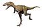

En 1874, A. Lakes découvre près de Golden, dans le Colorado des dents ayant appartenu à Tyrannosaurus. Dans les années 1890, J. B. Hatcher rassemble des éléments post-crâniens à l'est du Wyoming. À l'époque, les paléontologues pensaient avoir trouvé des fossiles d'une espèce de grand Ornithomimus (O. grandis), mais ils appartenaient en réalité à Tyrannosaurus rex. Les fragments de vertèbres découverts dans le Dakota du Sud par E. D. Cope en 1892 et nommés Manospondylus gigas ont également été reclassés en Tyrannosaurus rex.
Les premiers restes significatifs furent découverts en 1902 et l'animal fut décrit et baptisé par Henry Fairfield Osborn en 1905. Des découvertes de squelettes entiers, en 1988 (au Montana) et 1990 (Dakota du Sud), ont fait considérablement évoluer la connaissance du tyrannosaure. En 2006, on a découvert, dans un fémur exhumé dans le Montana, des tissus mous appelés « os médullaire » qui n'existent aujourd'hui que chez les oiseaux femelles. Après déminéralisation, les paléontologues y ont retrouvé des vaisseaux sanguins ayant conservé leur élasticité.
Barnum Brown, conservateur adjoint de l'American Museum of Natural History, trouva le premier squelette partiel de Tyrannosaurus rex dans l'Est du Wyoming en 1900. H.F. Osborn appela ce squelette Dynamosaurus imperiosus dans un article en 1905. Brown trouva un autre squelette partiel dans la formation de Hell Creek au Montana en 1902. Osborn utilisa cet holotype pour décrire Tyrannosaurus rex et D. imperiosus dans le même article11. En 1906, Osborn reconnait les deux comme étant des synonymes, et choisi Tyrannosaurus comme étant le nom valide62. Les éléments d'origine de Dynamosaurus se trouvent dans les collections du Natural History Museum de Londres.
Au total, Brown trouva cinq squelettes partiels de Tyrannosaurus. Le spécimen de 1902 fut vendu au Musée d'histoire naturelle Carnegie de Pittsburgh en Pennsylvanie en 1941. La quatrième trouvaille de Brown, la plus complète, fut également retrouvée à Hell Creek et se trouve au Musée américain d'histoire naturelle à New York.
Bien qu'il existe de nombreux squelettes de Tyrannosaurus de par le monde, une seule trace de pas a été documentée : celle du Philmont Scout Ranch, dans le Nord du Nouveau-Mexique. Elle a été découverte en 1983 et identifiée et documentée en 1994.
 Suivez-moi...